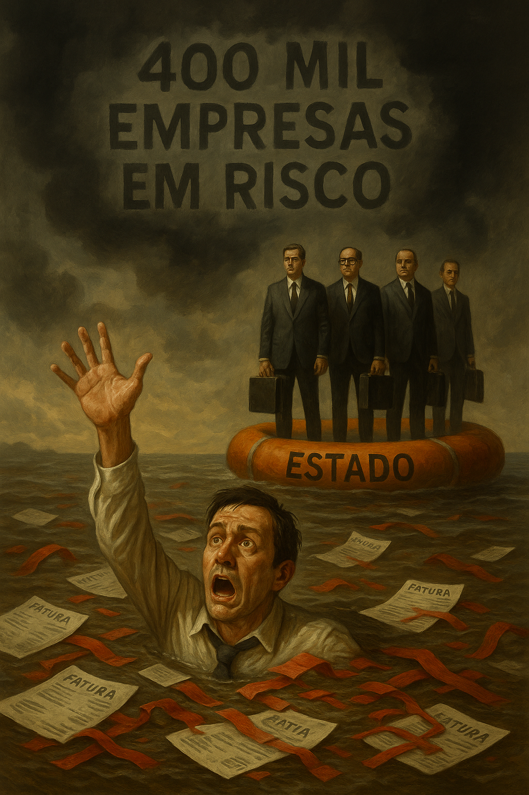

Publicado em 2025-05-20 11:45:57
Portugal, esse velho actor exausto do teatro europeu, vai-se arrastando de cena em cena, tropeçando nos cabos da miséria económica, enredado nas cortinas rotas do faz-de-conta produtivo. A mais recente representação deste drama veio sob a forma do "European Payments Report 2025": quase um quarto das empresas portuguesas admitem encerrar portas nos próximos dois anos. Sim, leu bem. Não são pequenas ou grandes, boas ou más. São simplesmente empresas que, depois de anos a sobreviver com arames, agora olham para o futuro com a mesma esperança de um soldado romano rodeado por gauleses.
E quem surge como vilão nesta crónica de morte anunciada? O Estado. O mesmo Estado que cobra IVA à cabeça do cliente, IRC sobre um lucro que já desapareceu, TSU que nem os patrões compreendem, e IRS com gosto em picar no osso. Esse mesmo Estado aparece agora retratado no estudo como o pior pagador. Um caloteiro institucionalizado com cara de cobrador de fraque.
O empresário em Portugal é um ser mitológico: tem de criar riqueza sem capital, inovar sem apoios, exportar com buracos nas estradas e pagar aos fornecedores mesmo quando os clientes (leia-se Estado) não pagam. É como pedir a um peixe para atravessar um deserto e, ainda por cima, cobrar-lhe imposto pela sombra que projecta.
Portugal é um país onde o risco não é recompensado, é punido. Onde os gestores têm de preencher mais formulários do que contratos. Onde a digitalização é um mito servido em PDF com assinatura manuscrita obrigatória. E quando, finalmente, um pagamento estatal chega, vem acompanhado de um ofício a pedir desculpa pelo erro de cálculo que exigia reembolsar... o próprio Estado.
Mas há sempre uma salva de palmas vinda do palco político. Sorrisos de ministros com PowerPoints coloridos, promessas de "simplificação administrativa", e mais um milhão para estudar os milhões que nunca chegaram à economia real. Os partidos, esses, já se habituaram ao conforto das subvenções. O empresário, esse que continue a pagar o que deve, o que não deve e o que o Estado acha que ele poderia vir a dever no futuro.
A verdade nua e crua é esta: Portugal é uma terra onde quem cria riqueza é suspeito, onde quem investe é idiota, e onde quem sobrevive é herói por acidente. O Estado, na sua cegueira fiscal, não percebe que ao matar o pequeno e médio empresário, está a serrar o galho onde senta a sua maquinaria burocrática.
Quatrocentas mil empresas em risco não é uma estatística. É um aviso histórico. É a sirene de um barco que se afunda em câmara lenta, enquanto os oficiais continuam a discutir a cor dos coletes salva-vidas.
E assim se escreve mais um capítulo da nossa tragédia em acto múltiplo. Com música ambiente do INE, decoração fornecida por Bruxelas, e a direcção artística do costume: Stabat in scena, non in causa.
Artigo de Augustus Veritas in Fragmentos de Caos